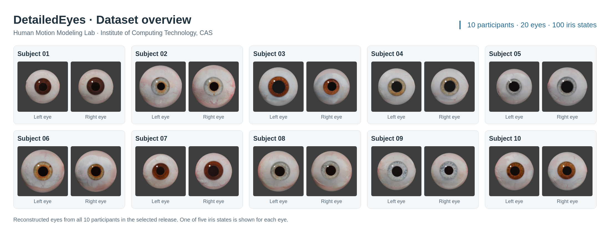

DetailedEyes@CAS
A dataset of reconstructed human eyes accompanying Capturing Rich Details of Human Eyes.

Release details
10 participants · 20 eyes · 5 iris states per eye
- File
DetailedEyes-encrypted-20261030.7z(one standalone encrypted archive)- Size
- 2.43 GB (2.26 GiB; 2,430,092,827 bytes)
- Contents
- 324 files, including dataset documentation
- SHA-256
831d57d0334f244e11bc6d0aa2172db8efb53d11c9dd333f82e550d3666ffe1c- Encryption
- AES-256 with encrypted file names; the extraction password is supplied separately by email to approved users.
The dataset is available by application. See the steps below to request access.
Verify the downloaded .7z file against the SHA-256 value above before extraction. Download checksums.
Complete the form
Read the license agreement, complete the application in English, and sign the PDF.
Submit by email
Email the completed PDF, including all agreement pages, to xsh@ict.ac.cn.
Download the dataset
Once your application is approved, we will provide download instructions for the encrypted archive and send its extraction password separately by email.
Request access
To apply, download the form below and email us the completed and signed PDF. Please keep all pages of the agreement in your submission and use an institutional email address if possible.
Email: xsh@ict.ac.cn
Suggested subject: [DetailedEyes@CAS Dataset Request] Your name — Institution
How to extract the dataset
Download DetailedEyes-encrypted-20261030.7z in full and verify its SHA-256 checksum. Open it with 7-Zip or another extractor that supports encrypted 7z archives, select Extract, and enter the password sent separately by email. This produces the DetailedEyes folder; no other archives or split parts are needed. The archive uses AES-256 encryption and hides file names until the password is entered. Keep the password private. After extraction, MANIFEST.sha256 lists the individual file checksums.
The dataset is available for approved noncommercial research and education under the license agreement. Each user must apply and receive approval. Do not use the data to identify participants or perform biometric identity matching, or share it with anyone who has not been approved. Please review the agreement before publishing images, derived data, or trained model weights.
Dataset name & citation
Please refer to this dataset as DetailedEyes@CAS in your publications, figures, and comparisons. When using the dataset in your research, please cite the accompanying paper and include a link to this dataset page.
Dataset page: https://hmmlab.cn/Media/DetailedEyes/
Paper citation
Zhiheng Zhang, Shuang Yang, and Shihong Xia. 2026. Capturing Rich Details of Human Eyes. ACM Transactions on Graphics 45, 6, Article 203. https://doi.org/10.1145/3842575
BibTeX
@article{zhang2026capturing,
author = {Zhang, Zhiheng and Yang, Shuang and Xia, Shihong},
title = {Capturing Rich Details of Human Eyes},
journal = {ACM Transactions on Graphics},
year = {2026},
volume = {45},
number = {6},
articleno = {203},
doi = {10.1145/3842575},
url = {https://doi.org/10.1145/3842575}
}Frequently asked questions
How do I complete and sign the application?
Complete the application in English using a PDF reader that supports fillable forms, and add a handwritten signature using its signing tool. You can also print the document, fill it out and sign it by hand, then scan all pages into a single PDF. Before submitting, check that your entries and signature are visible in the saved file.
How do I submit my application?
Email your completed and signed PDF to xsh@ict.ac.cn using the suggested subject line above. Include all pages of the license agreement in the same PDF. You must receive written approval before accessing the dataset.
Can students and research teams apply?
Yes. Students should provide the details of their supervisor or principal investigator. Each person who needs access—including a supervisor—must submit a signed agreement and receive individual approval. A team may submit all members’ applications in a single email.
Can I share the dataset with colleagues?
Only approved users may access the dataset. Colleagues who would like to use it must apply for access themselves. Do not share the dataset, encrypted archive, download link, or extraction password with anyone who has not received approval.
Can I publish images or model weights derived from the dataset?
Please describe what you intend to publish in your application. Only assets explicitly approved for public display may appear in research publications or presentations. Publishing original photographs, detailed textures, derivatives that allow the source data to be recovered, or trained model weights requires written permission under the license agreement.
What should I do if my download link expires?
Reply to your approval email to request a new download link. Link expiration does not affect the duration of your approved research license.
Application Privacy Notice
Before you submit
We receive your application information when you email the completed PDF. Filling in the PDF does not submit it to us. Check your PDF reader’s storage and cloud-sync settings when saving your application. Website hosting may separately process connection logs.
When you send an application
Your email provider and the receiving institution's email system process the message and attachments when you send them. The dataset team receives the information you include, such as your name, institution, email, research purpose, named collaborators and signed agreement. Please include only information needed for the request. Do not send identity documents, passwords or participant data.
Purpose and access
Application records are intended for eligibility and research-use review, recording permissions, providing access to the encrypted dataset archive and sending its extraction password separately by email, and communicating about data access, updates or incidents. Access should be limited to authorized personnel responsible for these tasks. Application details will not be published on this website.
Contact and retention
Responsible institution: Institute of Computing Technology, Chinese Academy of Sciences. Dataset administered by: Human Motion Modeling Lab (HmmLab).
Dataset, application, privacy and security contact: Shihong Xia, Professor; xsh@ict.ac.cn.
Unsuccessful or withdrawn application records are retained for 12 months after closure. Approved application records, signed agreements and approval correspondence are retained while permission remains active and for 3 years after it ends. We review records annually and delete information that is no longer necessary. Where a legal obligation or an unresolved dispute requires longer retention, only the necessary records are retained with restricted access until that need ends.
Applicants may contact the designated mailbox to correct information, withdraw a pending request, or ask about record retention and deletion, subject to applicable obligations. Dataset delivery also involves the selected file-hosting and email providers’ access, expiry and privacy settings.
Dataset participants
This notice concerns applicants. Obligations to protect the people represented in the dataset are specified in the Dataset License Agreement. Participant identifiers do not guarantee anonymity. Data access does not automatically authorize publication of photographs, textures or identifiable derivatives.